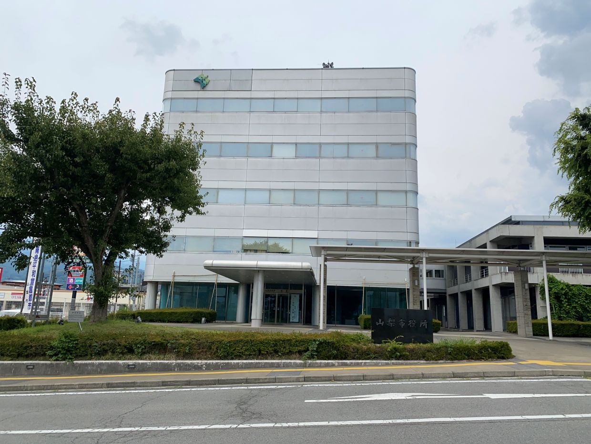

山梨県 山梨市
役場

県庁所在地ではない山梨市はかなり縦に長く、ブドウや桃の生産地となっています。北側は牧岡町と三富村を合併したため雰囲気もかなり違います。道の駅も複数あり、観光にはよい場所であると思います。私の親戚が住んでいるためかなり通っています。

県庁所在地ではない山梨市はかなり縦に長く、ブドウや桃の生産地となっています。北側は牧岡町と三富村を合併したため雰囲気もかなり違います。道の駅も複数あり、観光にはよい場所であると思います。私の親戚が住んでいるためかなり通っています。